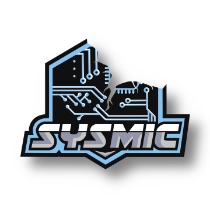
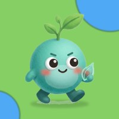
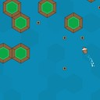
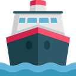
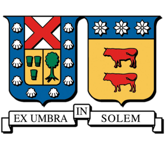
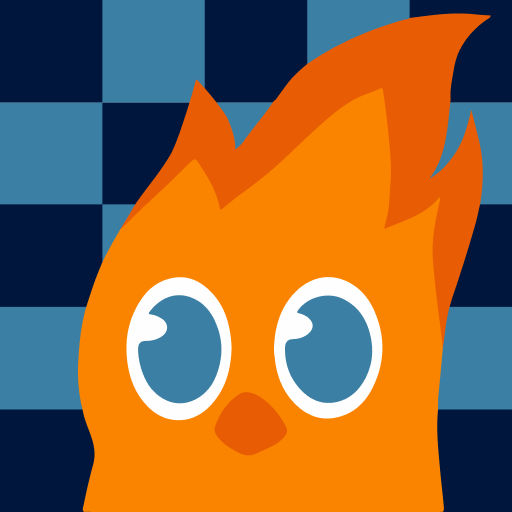
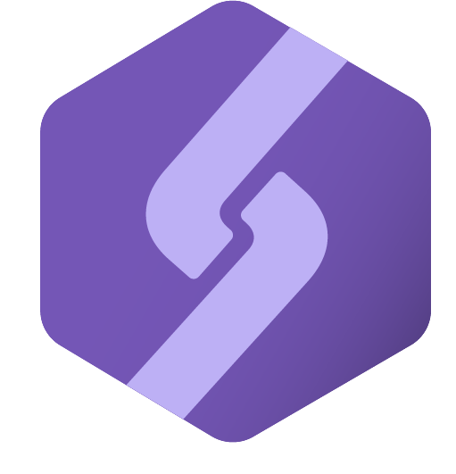
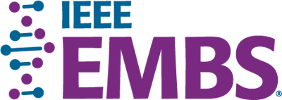
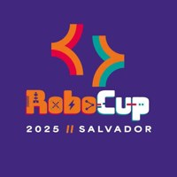
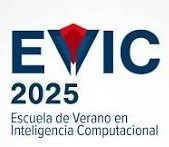

RoboCup SSL Engine
Robotics · Desktop app · 2026
A lightweight engine for RoboCup Small Size League robots: reads vision and referee data, drives the robots by radio or in the grSim simulator, and runs team strategy written in Lua.
Software & Machine Learning Engineer
I started out earning a living by programming slot machines in Garry's Mod, a Roblox-style sandbox game. Then I studied computer science at Universidad Técnica Federico Santa María, where I spent a good while building a graveyard of side apps before finally landing in robotics. Robotics became my main reason to keep learning, and it is what led me into machine learning. Since then I've been combining the two.

Android app
Tech: Flutter, PyTorch, ONNX, MLflow, scikit-learn

Robotics · Desktop app · 2026
A lightweight engine for RoboCup Small Size League robots: reads vision and referee data, drives the robots by radio or in the grSim simulator, and runs team strategy written in Lua.

Multiplayer game · PC · 2022
Online boat battles: steer your boat, grab ammo crates and sink your rivals. Hand-coded in Godot, with peer-to-peer multiplayer over Steam.

Inseport
Tech: RAG, TypeScript, Python, Langfuse, React, AWS Cloud

Universidad Técnica Federico Santa María
Fondecyt research project
Tech: PyTorch, MLflow, Python, NumPy, pandas
Sysmic Robotics
Tech: Rust, Python, Docker, MCP, TensorBoard

ChessMind
Tech: Vue.js, Django

Licklider · Remote
Tech: Power BI, PHP, Azure
Universidad Técnica Federico Santa María · Valparaíso, Chile
Thesis: “Enhancing Seizure Detection via Asymmetric Spatiotemporal Feature Extraction”
Universidad Técnica Federico Santa María · Valparaíso, Chile
Final project: “Interior Design Generation through Natural Language Processing for Game Engines”

IEEE BSN2026
Enhancing Seizure Detection via Asymmetric Spatiotemporal Feature Extraction. Porto, Portugal.

RoboCup SSL2025
Participant. Salvador, Bahia, Brazil.

EVIC2025
Dynamics Modeling for Reliable Sim-to-Real Transfer in RoboCup SSL. U. de los Andes, Santiago.
Finalist, NTT Hackathon2025
Santiago.
Outstanding Student2019
Universidad Técnica Federico Santa María.